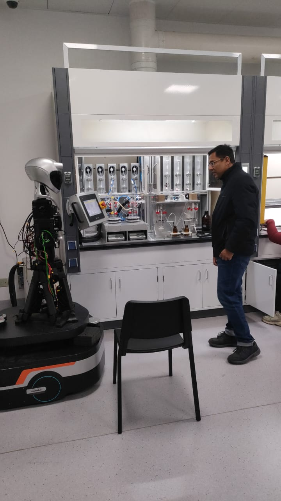

Department of Metallurgy & Materials Engineering
Professor & Senior Researcher
National Center of Nanotechnology, PIEAS
Loading dynamic materials fact...
Biography
I am a Professor of Materials Engineering at PIEAS University and a Senior Researcher at the National Center of Nanotechnology, Islamabad. I hold a PhD in Innovative & Engineered Materials from the Tokyo Institute of Technology (Tokyo Tech), Japan.
Over my 16+ year academic career, my research focus has pivoted on the chemical synthesis, surface modification, and functional characterization of advanced nanostructures. This includes 2D nanomaterials (MXenes), magnetic nanoparticles, core-shell architectures, upconversion systems, and materials design using computational frameworks like DFT and Machine Learning.
I have led several competitive research projects funded by the Higher Education Commission (HEC) of Pakistan and international bodies like KIST (South Korea) for EMI shielding, nanomedicine contrast imaging, and chemical loop processes.
Research Fields
Wet chemical synthesis of functional nanomaterials via sol-gel combustion, hydrothermal oxidation, chemical exfoliation of 2D MXenes, and core-shell architectures.
Phase transformations, thermal treatment design, mechanical properties evaluation, gas nitriding, and corrosion-resistant coatings.
Biomedical contrast agents (MRI/PL/CT), photodynamic therapy, upconversion nanocapsules for drug delivery, and microbially-synthesized therapeutic oxides.
Machine Learning and Deep Learning models for predicting mechanical behavior, supercapacitance of materials, and satellite imagery analysis.
Synthesis and validation of PEG-coated rare-earth doped ZnO nanoparticles designed for dosimetry applications in nuclear environments.
MXene-coated materials and flower-like nanocomposites for adsorbing heavy metal ions (Cs⁺, Cr⁶⁺, Pb²⁺) from industrial effluents.
Publications
Awards & Projects
PIEAS, Islamabad
Awarded the university Gold Medal and Certificate of Merit for achieving First Position overall in MS studies.
NESCOM, Pakistan
Recognized for academic excellence and securing top position overall in MS Nuclear Engineering (Materials Major).
MEXT Government of Japan
Received the highly competitive Japanese Government Ministry Fellowship for PhD research at Tokyo Tech.
Role: Principal Investigator | Funding: 7.7 Million PKR
Synthesizing hollow multi-functional core-shell microcapsules tailored for targeted drug delivery systems combined with MRI and photoluminescent imaging capabilities.
Role: Co-Principal Investigator | Funding: 3.4 Million PKR
Collaborative research with Tianjin University synthesizing advanced hollow zeolite oxygen carriers to optimize chemical looping efficiency.
Role: Co-Principal Investigator | Funding: 3.56 Million PKR (Combined)
Developing flexible delaminated transition metal carbide paper foils for high-attenuation shielding against electromagnetic waves.
Curriculum & Research
Symmetry in Crystalline Materials, Structure and Properties of Materials, Nanomaterials Engineering, Nuclear Reactor Materials.
Mechanical Behavior of Materials, Physical Metallurgy I & II, Heat Treatment, Nuclear Materials, Nanomaterials.
AFM based materials surface characterization, mechanical behavior evaluation, and chemical synthesis lab processes.
Dedicated atomic force microscopy (AFM), magnetic force microscopy (MFM), and scanning tunneling microscopy (STM) surface diagnostics.
Sol-gel combustion ovens, hydrothermal autoclaves, freeze dryers, zeta sizers, spin coaters, and high-temperature furnaces.
We actively collaborate with the National Center of Nanotechnology at PIEAS for advanced SEM, TEM, and XRD analysis.

Nanomaterial chemical preparation
High-resolution surface topography
ML property prediction models
Theranostic contrast trials
Research Group
Collaborators and students listed as first authors in our publications.
Research: Solvothermal synthesis of upconversion core-shell beads and porous hollow capsules for bimodal imaging.
Research: Layered double hydroxides and optical spectroscopy methods to evaluate E. coli remediation in water.
Research: Polyhydroxyalkanoates production and transformation of agricultural waste.
Research: Doping parameters of ZnO oxygen carriers for chemical looping combustion cycles.
Research: Flower-like MnO2/MXene hybrids for adsorption of hexavalent chromium in water.
Research: Synthesis of carbon-coated erbium hydroxide structures for high-performance MRI imaging.
Graduate thesis positions and funded research assistantships are updated periodically based on grants. Interested applicants can send a CV via email.
Academic Journey
PIEAS & National Center of Nanotechnology
April 2023 – Present
Supervising Ph.D./M.S. thesis projects, chairing departmental committees, and spearheading research grants in functional 2D nanomaterials.
PIEAS University, Islamabad
March 2019 – April 2023
Developed core MS Metallurgy & Materials Engineering syllabus. Procured instrumentation for new laboratories.
PIEAS University, Islamabad
October 2015 – March 2019
Established wet synthesis setups at the National Center for Nanotechnology. Initiated HEC start-up grants.
Tokyo Institute of Technology, Japan
September 2011 – September 2015
Specialized in solvothermal upconversion nanoparticles and hollow capsule beads for targeted biomedical treatments.
PIEAS, Islamabad
October 2004 – October 2006
Graduated with Fellowship, Gold Medal, and Certificate of Merit for achieved outstanding academic score (GPA 3.9/4).
University of Engineering & Technology (UET), Lahore
January 2000 – January 2004
Undergraduate degree completed with Honors. Research focused on Plain Carbon Steel aluminizing parameters.
Correspondence
Department of Metallurgy & Materials Engineering
PIEAS, Lehtrar Road, Nilore
Islamabad, 45650, Pakistan
+92-(51)-959-3641 (DMME, PIEAS)
Mobile: +92-344-5524669
Astrolabe Dial